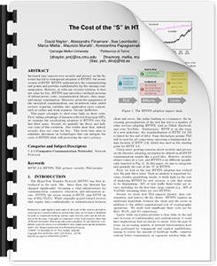
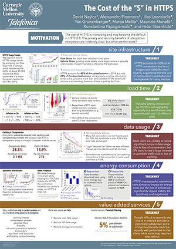

HTTPS Dashboard was created by a team of researchers exploring the use of HTTPS on the Web. We are interested HTTPS usage trends and the benefits and challenges of an HTTPS-by-default Web. In particular, this site displays the changes content providers sometimes make to their sites when they deploy an HTTPS version.
|  |
|
 |
|
Check out our CoNEXT 2014 short paper on the costs of HTTPS. |
| Read the Paper | See the Poster |
We capture a HAR for each page using Google Chrome and Chrome HAR Capturer. We generate screenshots using PhantomJS.
Our Web profiling code is available on Github.Questions or comments? Contact David Naylor.